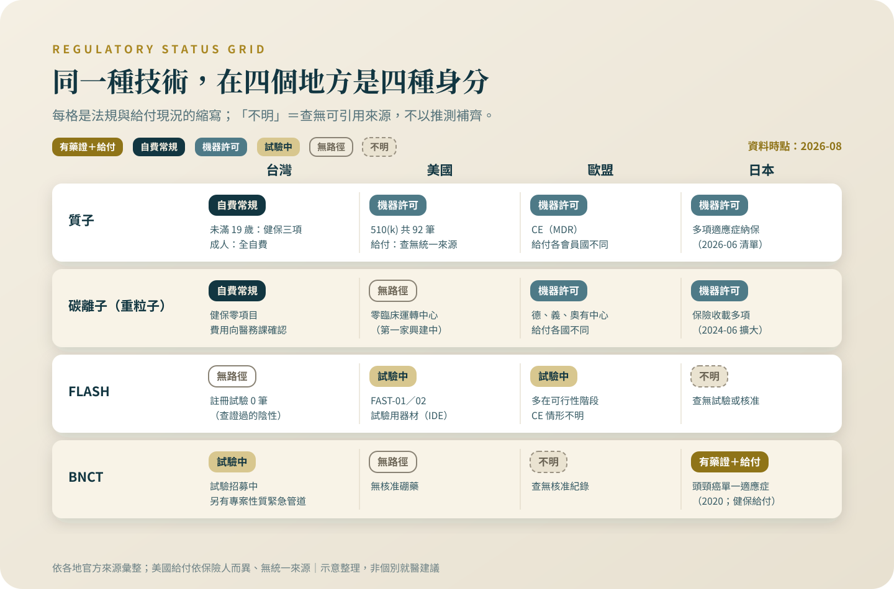

核准、給付、有效，是三件不同的事
同一個技術在四個地方可以是四種身分。把「有沒有 FDA 核准」當成品質指標，在這個領域兩個方向都會判斷錯。
「國外已經核准」是這個領域最有效的行銷語言，也最容易被讀錯。這一篇把台灣的五種身分、美日歐的制度差異和給付那一關拆開，給你一張可以自己查證的地圖。
警語一（排擠效應）：這個專題裡的治療，多數是自費、多數在標準治療之外。做決定之前要先知道，它們排擠掉的通常不是時間，是三樣真正有價值的東西：還沒用完的標準治療、後線會用到的錢、以及臨床試驗的資格（很多試驗會排除近期接受過其他實驗性治療的人）。還有一樣更難察覺——體能。在一個沒有效果的療程裡耗掉的體力，等到真正有用的選項出現時，可能已經撐不住了。所以問題不是「這個值不值得試」，是「做了這個，我放棄掉什麼」。
法規身分只要讀錯一格，代價比任何單一療程都貴——把「機器可以上市」讀成「對我的癌症有效」的人，付掉的是後線的錢，和一段拿不回來的時間。
警語二（找對的醫師）：這一類決定不要一個人做，也不要只聽提供這項治療的人說。你要找的是一個願意告訴你「這個不適合你」的醫師——如果對方從頭到尾沒有說過任何一句「不適合誰」，那不是諮詢，是推銷。
先說我的位置：質子與熱治療都是我自己領域內的技術，我服務的醫院也有相關設備。所以這個專題的每一條線，我畫得比別人更緊，不是更鬆。
「這個治療在國外已經核准了。」這句話我在門診聽過太多次，每次都反問三句：哪一國？核准的是什麼？給付了沒有？這一篇把三個詞拆開——它們真的是三件事。
三個詞，三關，各自在問不同的問題
「核准」問的常常是機器或安全：能不能合法上市，經常不問對哪個癌別有效。「給付」是另一關：有人替公眾看過證據，決定要不要用公家的錢買單，門檻通常更高。「有效」是第三件事：試驗證明了什麼、在誰身上、跟什麼比。三關各自獨立，所以會出現有核准沒給付、有給付但證據是單臂試驗（單臂＝所有人接受同一種治療、沒有對照組）、機器到處有核准但沒有哪個癌別被證明用它比較好。
台灣的五種身分，各自證明什麼、不證明什麼
在台灣，一個新治療可能以五種身分出現。臨床試驗：法源是藥品優良臨床試驗作業準則，試驗是「以發現或證明藥品之作用為目的」在人體執行的研究，且預期利益應超過可能風險[1]——它證明「正在被研究」，不是「有效」。特管辦法核准：醫療機構施行特定細胞治療技術，要向衛福部交施行計畫——適應症、操作醫師、收費方式、「已發表之國內外相關文獻報告」——核准後負有不良反應通報與年度成果報告義務[2]。申請時交的是別人發表的文獻，不是自家的隨機試驗：特管是管理與安全的框架，不是療效認證。恩慈與專案核准：藥事法第 48 條之 2，前提是危及生命或嚴重失能、且國內無適當藥品或替代療法，可專案放行、也可隨時廢止[3]——它證明的是處境特殊，不是療效。醫材許可證：醫療器材管理法的查驗登記，審的是器材本身[4]。再生醫療雙法：再生醫療法與再生醫療製劑條例已於 2026 年 1 月 1 日施行[5][6]；原則上執行再生技術要先完成人體試驗，危及生命且無替代方案、或先前已依特管核准的案件有例外與過渡條款[5]。兩制怎麼分工我查不到衛福部說明文件，就停在查證得到的地方。五種身分，沒有一種等於「對你的癌症有效」。

美國的「核准」，核的常常是那台機器
質子治療機在美國的身分，是聯邦法規 21 CFR 892.5050 的「醫用帶電粒子放射治療系統」，第二級醫材[7]。510(k) 程序是：證明新機器與已合法上市的機器「實質等同」，就能上市[8]。到我查證的 2026 年 8 月，這個產品代碼下有 92 筆這樣的核可、零筆需要證明療效的上市前核准（PMA）[9]。意思是：「FDA 核准質子治療某某癌」這句話在制度上不存在——FDA 核的是機器可以賣，不是對哪個癌別有效。歐盟的 CE 標章同理：證明器材符合安全與性能要求，不是按癌別發的療效判定[10]。「通過 FDA」翻成白話：這台機器取得上市資格。就這麼多。
同一個技術，四個地方，可以是四種身分
把四種技術放進四個地方，每一格都不一樣。BNCT：日本在 2020 年 3 月核准了硼藥物，適應症是「無法切除之局部晚期或局部復發頭頸癌」[11]，同年 6 月納入日本健保，條件是全數病人進入上市後登錄調查[12]；美國的藥品資料庫裡，同一個硼藥物是零筆（2026 年 8 月檢索）[13]。重粒子：日本學會 2026 年 6 月更新的清單列出十多項保險適應症，最近一次擴大納入早期肺癌與大腸癌肺轉移，但多數項目掛著「限手術難以根治者」的但書[14]；同時，美國臨床運轉中的碳離子中心零家，第一家還在興建[15]。FLASH：四地都只有臨床試驗，第一個人體試驗是 10 位骨轉移病人的可行性研究[16]；台灣連一筆註冊中的 FLASH 放療試驗都沒有（2026 年 8 月檢索）[17]。質子：四地的機器都「有核准」，因為核准的本來就是機器；真正把各地分開的是給付那一關。
這張表只為了讓你帶走一句話：把「有沒有 FDA 核准」拿來當品質指標，在這個領域兩個方向都會判斷錯。BNCT 沒有 FDA 核准，但在日本有藥證、有給付、有全數登錄的上市後監測；質子到處都「有核准」，但那句話對你的癌別什麼都沒說。再多一層：這張藥證背後是什麼等級的證據——一個第二期單臂試驗[18]加上市後全數調查[12]，細節在〈BNCT：不是用瞄準的放療〉——「有給付」也不自動等於證據等級很高。該問的從來不是「有沒有核准」，是「核准的是什麼、憑什麼證據、誰付錢」。
台灣這一端：質子的給付，要先看第一行
台灣健保自 2026 年 1 月 1 日起給付質子，新增三個支付項目，點數（健保內部的計價單位）分別是 676,111、1,030,540 與 1,266,499 點；但三項的第一行是同一句——「適用範圍：年齡未滿十九歲病人」，且須事前審查、同一原發癌終生限給付一次、整個療程包裹計算[19]。所以：未滿十九歲、符合條件，有健保；成人，自費。各醫院自費總價不一，向該院醫務課確認。重粒子在健保現行給付項目全表是零筆（2026 年 8 月檢索）[20]，運轉中那家醫院查不到官方公告價格——流傳的金額出自媒體報導，我不引用；要問，一樣問醫務課。BNCT 在台灣是臨床試驗加一條專案性質的緊急治療管道，不是常規醫療：目前有招募中的復發頭頸癌與惡性腦瘤試驗[21]，另有恩慈性質治療的個案系列發表[22]。FLASH 剛剛說過：零試驗，零路徑[17]。
想去日本治療？先把「身分」換算成價錢
日本的健保價目，適用的是日本的被保險人。日本國立量子科學技術研究開發機構所屬醫院的官方網頁，對未加入日本公的醫療保險的外國病人開的價是：重粒子治療 5,786,000 日圓（含稅），且要透過日方指定的醫療協調機構接洽[23]。這是一家機構的公告價，不能外推到其他院所；它示範的是原則：同一台機器，身分不同，價錢不同。錢之外還有四件事要在出發前想清楚：治療那幾週的住宿與陪病；診間的語言由誰翻譯；治療中或回國後出併發症誰接手；回台後的追蹤影像和病歷交給哪位醫師銜接。這四件事沒有文獻可引，是臨床醫師的提醒：跨國治療最貴的部分，常常不在報價單上。
先問身分，再問療效——順序不要反過來
把這一篇壓成幾句可以直接問出口的話：這個治療在台灣的身分是哪一種——試驗、特管、恩慈專案、還是常規醫療？「國外核准」是哪一國、核准的是藥、機器、還是施行計畫？適應症的原文怎麼寫？有沒有任何一地的公共保險給付它？有的話，條件和但書是什麼？我要付的總價是多少，有沒有官方公告？答案每多一個「不知道」，你就多一個放慢腳步的理由。四種技術的證據本身，分別在〈質子：打得準，然後呢〉〈重粒子：比較重，不等於比較好〉〈FLASH：一秒打完的放療，還在第一期〉〈BNCT：不是用瞄準的放療〉。
查證日期：2026 年 8 月。
下次有人拿「國外核准」說服你，先問三句：哪一國、核准的是什麼、給付了沒有。查證入口都在文章裡；查不到官方價格的項目，直接問該院醫務課，不要用轉傳的數字做決定。
參考資料
全國法規資料庫。藥品優良臨床試驗作業準則（修正日期民國 109 年 8 月 28 日）。
全國法規資料庫。特定醫療技術檢查檢驗醫療儀器施行或使用管理辦法（修正日期民國 114 年 12 月 31 日）。
全國法規資料庫。藥事法第 48 條之 2。
全國法規資料庫。醫療器材管理法（公布民國 109 年 1 月 15 日）。
全國法規資料庫。再生醫療法（行政院令定自民國 115 年 1 月 1 日施行）。
全國法規資料庫。再生醫療製劑條例（行政院令定自民國 115 年 1 月 1 日施行）。
U.S. Electronic Code of Federal Regulations（eCFR）。21 CFR 892.5050: Medical charged-particle radiation therapy system。
U.S. Food and Drug Administration。Premarket Notification 510(k)。
openFDA。510(k) 資料庫：產品代碼 LHN 檢索結果（2026-08-29 檢索）。
EUR-Lex。Regulation (EU) 2017/745 on medical devices（MDR，合併版 02017R0745-20250110）。
日本厚生勞動省／醫藥品醫療機器總合機構（PMDA）。Report on the Deliberation Results: Steboronine 9000 mg/300 mL for Infusion（borofalan (10B)）（審議結果 2020 年 3 月 3 日）。
Sato, M., Hirose, K., Takeno, S., et al. (2024). Safety of Boron Neutron Capture Therapy with Borofalan(10B) and Its Efficacy on Recurrent Head and Neck Cancer: Real-World Outcomes from Nationwide Post-Marketing Surveillance. Cancers, 16(5), 869. DOI: 10.3390/cancers16050869
openFDA。drugs@FDA 與 510(k) 資料庫檢索：borofalan、carbon ion、FLASH（2026-08-29 檢索，均為 0 筆）。
公益社団法人日本放射線腫瘍学会（JASTRO）。粒子線治療（陽子線治療・重粒子線治療）の保険適用となる疾患（2026 年 6 月更新）。
Thariat, J., Letellier, V., Ohno, T., et al. (2026). Clinical White Paper From the "Hadrontherapy for Life" Symposium—Clinical Expansion of Carbon Ion Facilities Worldwide. International Journal of Particle Therapy, 19, 101290. DOI: 10.1016/j.ijpt.2025.101290
Mascia, A. E., Daugherty, E. C., Zhang, Y., et al. (2023). Proton FLASH Radiotherapy for the Treatment of Symptomatic Bone Metastases: The FAST-01 Nonrandomized Trial. JAMA Oncology, 9(1), 62-69. DOI: 10.1001/jamaoncol.2022.5843
ClinicalTrials.gov。台灣 FLASH 放射治療試驗檢索（2026-08-29 檢索，0 筆）。
Hirose, K., Konno, A., Hiratsuka, J., et al. (2021). Boron neutron capture therapy using cyclotron-based epithermal neutron source and borofalan (10B) for recurrent or locally advanced head and neck cancer (JHN002): An open-label phase II trial. Radiotherapy and Oncology, 155, 182-187. DOI: 10.1016/j.radonc.2020.11.001
行政院公報（第 031 卷第 245 期）。全民健康保險醫療服務給付項目及支付標準部分診療項目修正（114 年第 4 次修正，自 115 年 1 月 1 日生效）。
衛生福利部中央健康保險署（政府資料開放平臺）。全民健康保險醫療服務給付項目及支付標準——現行給付項目（2026-08-29 檢索）。
ClinicalTrials.gov。台灣硼中子捕獲治療試驗檢索（2026-08-29 檢索）。
Wang, L. W., Hsueh Liu, Y. W., Peir, J. J., et al. (2026). Compassionate boron neutron capture therapy for locally recurrent nasopharyngeal cancer: A retrospective study. Journal of the Chinese Medical Association, 89(2), 109-115. DOI: 10.1097/JCMA.0000000000001339
国立研究開発法人量子科学技術研究開発機構（QST）QST 病院。海外からの受診について（2026 年 4 月 17 日更新）。
本文為一般性衛教說明，整理自公開發表的研究與官方公告，不能取代面對面的診療。研究結果適用的族群通常有嚴格條件，是否適用於你的情況，請與你的主治醫師討論。請勿依據本文自行調整、中斷或更換治療。
← 回到次世代治療專題